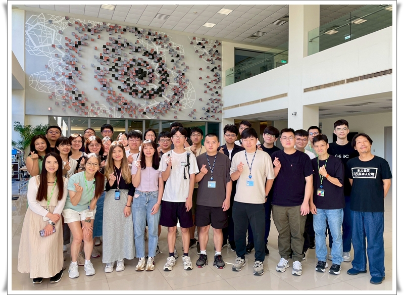
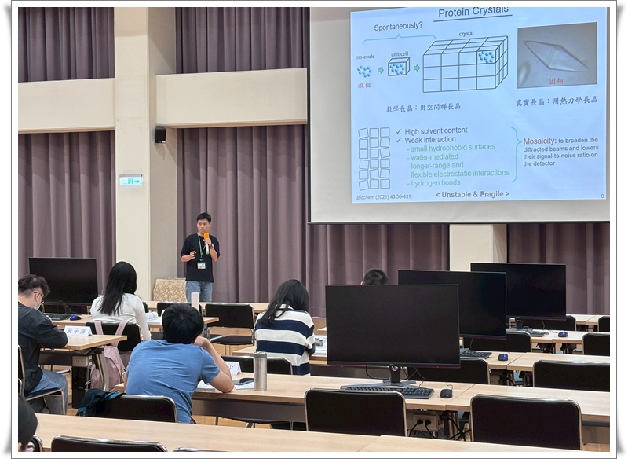
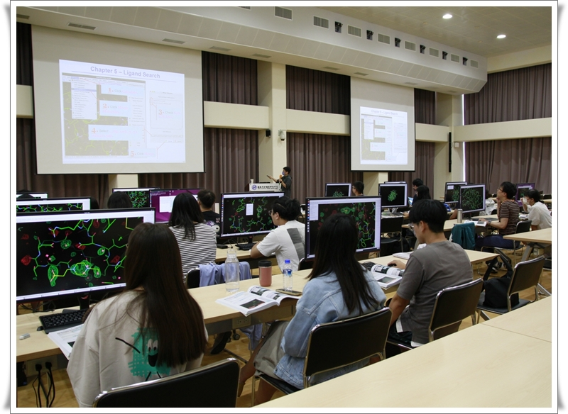
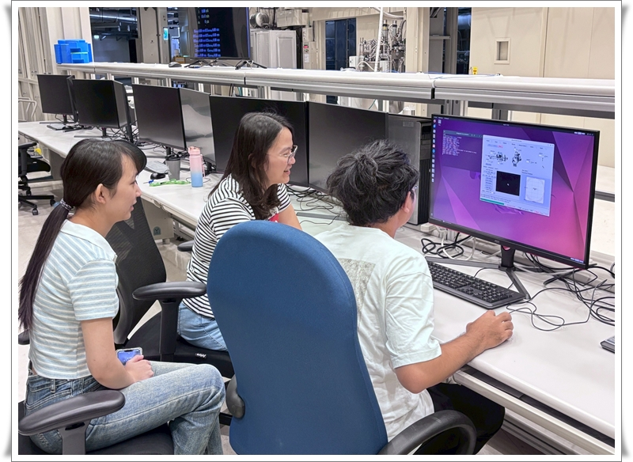
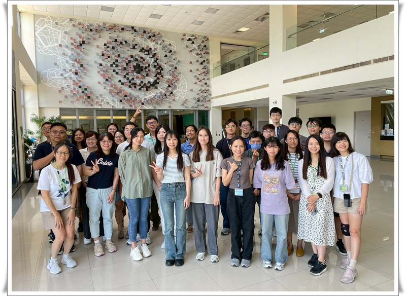
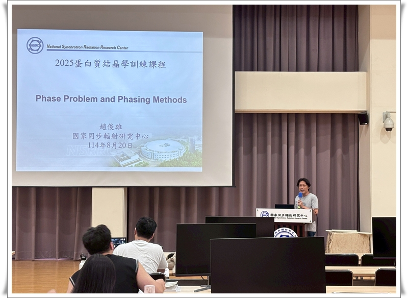
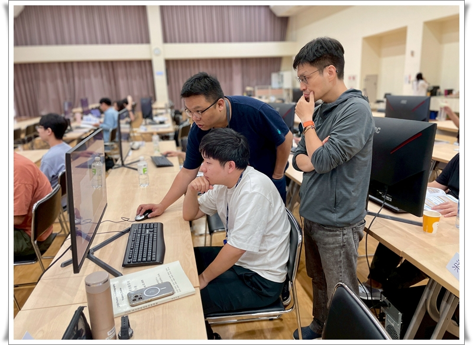
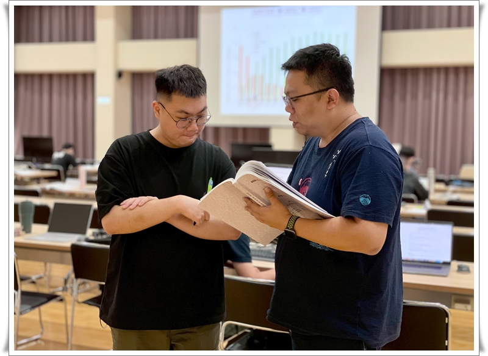

總培訓學員人數
認可對研究有實質幫助
理論課程滿意度
實習課程滿意度
黃怡珍 小姐 (Miss Yi-Chen Huang)
第一梯次：08/18 ~ 08/22 | 第二梯次：08/25 ~ 08/29
| Day 1 | Day 2 | Day 3 | Day 4 | Day 5 |
|---|---|---|---|---|
| 蛋白質長晶與晶體對稱性 基礎繞射原理 |
數據收集策略優化 XDS 數據處理實作 |
相位問題與解法原理 SAD Phasing 實作 |
分子置換法實務 Ligand Search 實作 實驗站導覽 |
輻射傷害評估 低溫結晶學實務 |
陳懿慧、黃駿翔、周重光、趙俊雄、曾建璋、姜政宏、李宜靜
李宜靜、柯金伶、姜政宏、陳怡蓉、陳懿慧、黃婉婷、葉孋嬋、黃楨盈、陳慧珊、邱采綺
● 報名程序： 100% 學員滿意流程順暢度。
● 餐食服務： 獲得學員一致好評，特別感謝訂餐同仁。
● 助教表現： 極高熱忱且專業，能有效引導新手解決問題。
「非常滿意課程的安排以及內容，受益良多。」
「一年一次的結晶學課程為期一週其實差不多已足夠。」
「對於結晶學的理論基礎有著更紮實的認識。」
「了解整體流程及軟體操作很實用，雖然原理部分可能聽不太懂，但還是很感謝有這樣的課程。」
「謝謝小老師的幫助和解惑，讓整個實作課程都更加順利。」
「我覺得小老師都很好，也對實驗上給了很多意見，這幾天真的收穫很多。」
2025 年度訓練課程精彩瞬間，包含理論授課、軟體實作與實驗站導覽。

第一梯次合照

理論課程

軟體實習課程

TPS 實驗站分組實習

第二梯次合照

理論課程

軟體實習課程

課後交流